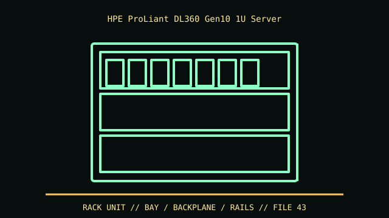

[ IDENTIFIED ENCLOSURE // PROLIANT DL360 GEN10 (SFF/LFF MODEL FAMILY) ]
HPE ProLiant DL360 Gen10 1U Server
42.9 × 434.6 × 707 mm for SFF configuration; LFF depth about 750 mm. Rails, bezel and cable arm add additional rack clearance.

VARIANT / ARCHIVAL CAVEAT: DL360 Gen10 differs from Gen10 Plus and Gen11; 10SFF/4LFF and secure-encryption options change cage and controller. Read product ID and P/N.
Mechanical specifications and fit
| Catalog identity | ProLiant DL360 Gen10 (SFF/LFF model family) |
|---|---|
| Dimensions and clearances | 42.9 × 434.6 × 707 mm for SFF configuration; LFF depth about 750 mm. Rails, bezel and cable arm add additional rack clearance. |
| Drive bays / mounts | Up to 10 SFF 2.5-inch hot-plug bays or 4 LFF 3.5-inch bays depending on chassis; options include rear drives on compatible variants. |
| Board, system and compatibility | HPE proprietary motherboard, Smart Array/backplane, riser and rail kit. 1U low-profile card and thermal requirements are riser-specific. |
| Revision / identification | DL360 Gen10 differs from Gen10 Plus and Gen11; 10SFF/4LFF and secure-encryption options change cage and controller. Read product ID and P/N. |
Preservation and installation notes
DL360 Gen10 differs from Gen10 Plus and Gen11; 10SFF/4LFF and secure-encryption options change cage and controller. Read product ID and P/N.
HPE proprietary motherboard, Smart Array/backplane, riser and rail kit. 1U low-profile card and thermal requirements are riser-specific.
- Capture the complete model/SKU, serial/date label, board assembly and bay/backplane/riser identifiers before disassembly; keep matched screws, trays, carriers, feet and cables with the case.
- Check the cited manual's specific build option before transferring hardware. Published maximum GPU, drive, fan or radiator capacity may not be simultaneous when a removable cage or alternative riser occupies that volume.
- For rack and vintage systems, preserve the exact rails, shields, doors, brackets and model-specific safety instructions; do not infer compatibility from a familiar brand or physical connector shape.
Manufacturer manuals and archival sources
- HPE ProLiant DL360 Gen10 QuickSpecsPrimary manufacturer or model-specific technical/manual reference used for the identification and mechanical data above.
- HPE DL360 Gen10 physical specificationsSecond product manual, manufacturer resource or established technical archive; choose the exact regional SKU and revision.
When exact dimensions depend on configuration, the text says so; verify the measured specimen before making a fit or restoration decision.